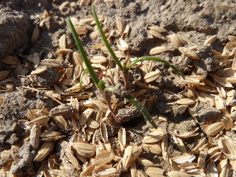
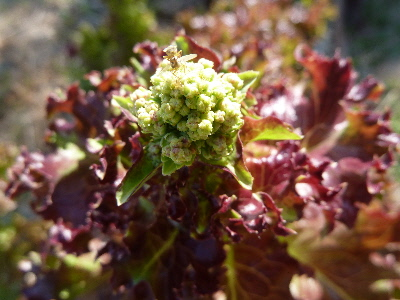
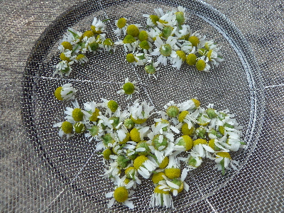
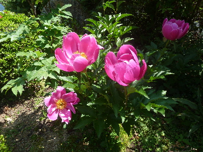
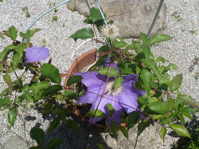
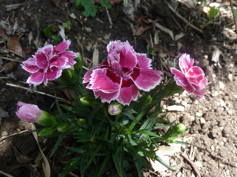
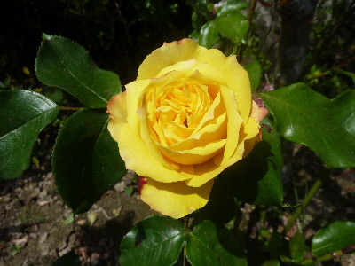
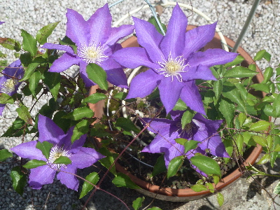
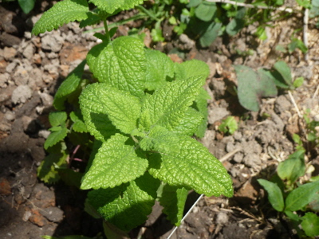

遊びで植物を育てよう
2017/05/28
これが丘ヒジキかな。
丘ヒジキの種を蒔きました。

芽が出ました。
本物を見たことないですが、これが丘ヒジキかな？
食べたことのないですが、どんな味でしょうね。楽しみです。
【5月TOP】
【日記TOP】
【園芸TOP】
2017/05/28
レタスが終わった。
レタスの蕾が出来ました。

このレタスは今日の収獲で終わりです。
【5月TOP】
【日記TOP】
【園芸TOP】
2017/05/20
カモミールの収獲開始です。
今年はカモミールの成長が悪いです。
いつも勝手に生えて、勝手に花が咲いているので手間をかけていないですが、来年からはちょっと手を加えようかな。

今日の収獲はこれだけ。乾燥したら縮んでちょっとになりますね。
【5月TOP】
【日記TOP】
【園芸TOP】
2017/05/14
シャクヤクが綺麗です。
庭に大きな花があるといいですね。

綺麗なうちにしっかり見ておかないと。
【5月TOP】
【日記TOP】
【園芸TOP】
2017/05/14
クレマチスが散りだしました。
花はすぐ散りますね。

葉っぱがもっと沢山あればグリーンとしていいんですけど、これはあまり茂らないので花が終わるととっても地味です。
【5月TOP】
【日記TOP】
【園芸TOP】
2017/05/14
カーネーションを庭に植えました。
鉢植えよりも地植えの方が水やりが楽なので、庭に植えました。

秋までしっかり花が咲き続けてくれるかな。
【5月TOP】
【日記TOP】
【園芸TOP】
2017/05/07
薔薇が咲き出しました。
今年は冬に剪定したせいか、花の高さがそろっていて見栄えがいい気がします。

この花も終わったら切って、きちんと管理しよと思います。
【5月TOP】
【日記TOP】
【園芸TOP】
2017/05/07
クレマチスが綺麗に咲いていました。
毎年、母の日が近くなると咲きますね。

綺麗なので挿し木して増やそうと思うんですが、花が終わると存在を忘れてしまうんですよね。
今年こそは挿し木をしたいと思います。
【5月TOP】
【日記TOP】
【園芸TOP】
2017/05/07
レモンバームを買いました。
ホームセンターで安く販売していたので買いました。
50円だったかな。

1本くらいだったら邪魔にならないので、試に植えました。
好みの味とか香だったらいいな。
【5月TOP】
【日記TOP】
【園芸TOP】
過去の日記
【2024年5月の日記】
【2023年5月の日記】
【2022年5月の日記】
【2021年5月の日記】
【2020年5月の日記】
【2019年5月の日記】
【2018年5月の日記】
【2017年5月の日記】
【2016年5月の日記】
【2015年5月の日記】
【2014年5月の日記】
【2013年5月の日記】
【5月TOP】
【日記TOP】
【園芸TOP】
畑仕事じゃないよ。
【おいしいものを食べよう。】【たくさん寝よう。】
【ソロ活をしよう!】【季節感のあることをしよう。】【動画視聴はほどほどに。】【当サイトの全てのコンテンツは無断転載禁止です。】